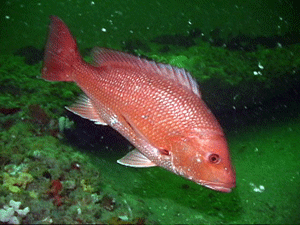

Clownfish

A layer of mucus on the clownfish's skin makes it immune to the fish-eating anemone's lethal sting.
- Scientific Name: Amphiprioninae
- Average Length: 11 centimeters
- Average Lifespan: 7 years
- Habitat: Tropical coral reefs
Bright orange with three distinctive white bars, clown anemonefish are among the most recognizable of all reef-dwellers. They reach about 11 centimeters in length, and are named for the multicolored sea anemone in which they make their homes.
Red Snapper

Red snapper are one of the Gulf of Mexico’s signature fish. They are a top predator in the Gulf ecosystem.
- Scientific Name: Lutjanus campechanus
- Average Length: 90 centimeters
- Average Lifespan: 50 years
- Habitat: Gulf of Mexico
Snappers are carnivorous, active, and voracious, with large mouths and sharp teeth. Most species travel in dense schools. Best known is the northern red snapper, often called the red snapper, an important food fish. It is abundant in the Gulf of Mexico and also frequents the Atlantic Coast north to Long Island. The northern red snapper grows to 3 ft (90 cm) in length, weighs up to 35 lb (16 kg), and is a deep rose-red in color.